Data Viz Collective
Presentations
Projects
Data Visualizations
About Me
Source Code
Suggestions / Feedback
Categories
All
(138)
#TidyTuesday
(76)
A4 Size Viz
(34)
Animation
(4)
Bar Chart
(1)
CRS
(1)
Chandigarh
(1)
Chloropleth
(3)
Claude Sonnet Code
(1)
Colour Scales
(1)
Colours
(2)
Convex Mark Hull
(1)
Data Is Plural
(7)
Data Visualization
(1)
Data Wrangling
(1)
Demographics
(4)
Density Ridges Plot
(1)
Donut Chart
(5)
Dumbbell Chart
(1)
Facet Graph
(1)
Geocoding
(1)
Geocomputation
(16)
Geopolitics
(5)
Governance
(12)
Harvard
(1)
Harvard Dataverse
(1)
Haryana
(6)
Heat Map
(1)
Hierarchical Data
(1)
Images
(9)
India
(10)
Inequality
(1)
Interactive
(6)
Line Graph
(1)
Map
(1)
Maps
(33)
Network Graph
(1)
Open Street Maps
(6)
Our World in Data
(22)
Pie Chart
(2)
Population Density Raster
(1)
Public Health
(28)
Raster
(3)
Raster Maps
(1)
Repel richtext
(1)
Scatter-plot
(1)
Sports
(1)
Stream Plot
(1)
Time Series
(2)
USA
(3)
Web Scraping
(3)
Webscraping
(1)
World Bank
(3)
World Bank Data
(6)
colours
(1)
data.gov.in
(1)
ggimage
(1)
packcircles
(1)
tidyterra
(1)
{cartogram}
(1)
{circlize}
(1)
{cropcircles}
(1)
{donutsk}
(2)
{elevatr}
(1)
{geofacet}
(3)
{geomtextpath}
(1)
{gganimate}
(2)
{ggbeeswarm}
(1)
{ggblend}
(3)
{ggbraid}
(2)
{ggbump}
(2)
{ggflags}
(4)
{ggforce}
(2)
{gghalves}
(1)
{ggimage}
(9)
{ggiraph}
(1)
{ggmap}
(10)
{ggparliament}
(1)
{ggpattern}
(2)
{ggraph}
(1)
{ggrepel}
(5)
{ggridges}
(3)
{ggsankeyfier}
(2)
{ggstream}
(1)
{ggtext}
(4)
{ggwordcloud}
(2)
{imgpalr}
(1)
{magick}
(8)
{marquee}
(1)
{osmdata}
(5)
{packcircles}
(2)
{rvest}
(4)
{scatterpie}
(4)
{sf}
(7)
{terra}
(2)
{tidygeocoder}
(1)
{tidytext}
(1)
{treemapify}
(1)
{vayr}
(1)
{waffle}
(1)
Data Visualizations
Author
Aditya Dahiya
Order By
Default
Date - Oldest
Date - Newest
Title
world_elev_pop_chart
November 2, 2025
Global Population by Latitude and Longitude, 1990-2020
November 2, 2025
Tree-Maps: The Great Fertility Transition
November 1, 2025
The Global Fertility Transition: By Continents
October 26, 2025
Who Wins British Literary Prizes? A Diversity Analysis
October 25, 2025
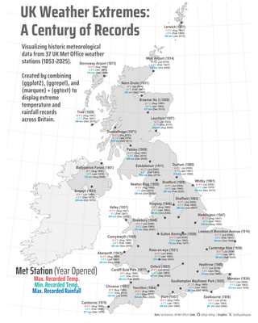
UK Weather Extremes: A Century of Records
October 21, 2025
Obesity Trajectories Across 85 Nations
October 20, 2025
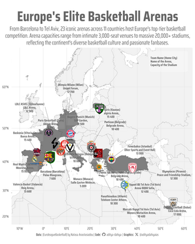
Mapping Europe’s Elite Basketball Arenas
October 12, 2025
Tracking Cranes at Lake Hornborgasjön
October 5, 2025
The Age Gap: Female vs Male Chess Players Worldwide
September 26, 2025
Global Cuisine Nutrition Profiles
September 23, 2025
Passport Power Shifts: 2006-2025
September 14, 2025
A map of Australia’s Frog Families
August 31, 2025
From Long to Short: Hit Song Evolution
August 28, 2025
AI Adoption Across Europe
August 26, 2025
Europe’s Energy Pivot: Mapping the Gas Import Revolution
August 25, 2025
Mapping Global Climate Attribution Studies
August 23, 2025
Mapping the Evolution of Scottish Munros
August 23, 2025
Redistribution Effect: How Taxes Transform Inequality
August 6, 2025
Netflix Movie Runtimes vs. Viewership
July 30, 2025
Spatial Data Visualization in R: NYC Subway Art Map
July 24, 2025
The contracting Services Stream for British Library
July 15, 2025
A Century-wise Look at Literary Language Trends
July 9, 2025
Colour Recognition in a Spiral
July 6, 2025
Three Decades of Gas and Diesel Prices in the U.S.
July 2, 2025
The Measles Map: Country-wise Incidence Since 2014
July 2, 2025
Testing the Waters: Sydney’s Beaches and Bacteria
May 17, 2025
Tracking Mt. Vesuvius: Seismic Centroids on the Move
May 11, 2025
Postal map of Chandigarh (India) using data.gov.in
May 10, 2025
Mapping NSF Grant Losses by Directorate and Grant Type
May 5, 2025
useR 2025: Presentations and Sessions
April 30, 2025
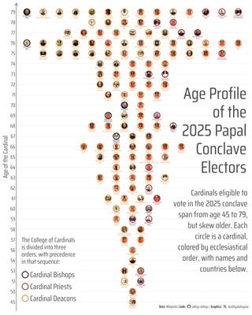
Beeswarm plot on Age Profile of 2025 Papal Conclave
April 26, 2025
Visualizing Cardinal Electors with {ggparliament} and {ggimage}
April 26, 2025
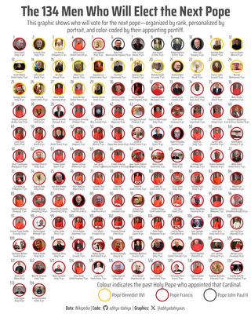
Guardians of the Keys: The Electors of the Next Pope
April 25, 2025
Monthly Patterns Lie, Hourly Patterns Reveal (4/20)
April 24, 2025
Body Mass Distributions by Penguin Species - Ridgeline Density Plots
April 20, 2025
Plotting Penguins: Bill Dimensions Across Species
April 16, 2025
Coal Clusters: Charting India’s Energy Sources
April 13, 2025
Visualizing Hurricane History: Landfalls, Wind Speed & Scale
April 11, 2025
Density Divide: Urban vs. Rural Voting (2024)
April 9, 2025
The Geography of Care: USA’s Health Maps
April 8, 2025
Pokemons: Heights and Weights (a scatterplot)
April 1, 2025
Visualizing the North Korean Trash balloons
March 31, 2025
Railway Lines in Great Britain - UK and Ireland
March 26, 2025
Exploring London’s Rivers & Bridges
March 26, 2025
Amazon’s Hidden Story: What Word Frequency Reveals About Its Journey
March 25, 2025
Mapping Harvard Yard & Campus Buildings with ggplot2
March 23, 2025
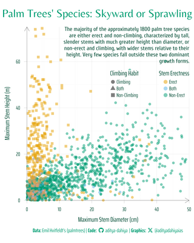
Palm Trees’ Species: Skyward or Sprawling
March 22, 2025
Historical Sites in the City of London (Borough of London)
March 22, 2025
Animation in the Long Run: Pixar’s Increasing Movie Lengths
March 11, 2025
A City of Strays: Pie Charts of Animal Rescues in Long Beach
March 7, 2025
Who’s the Reference? Racial Patterns in studies.
March 1, 2025
Haryana: Toll Booths, Highways and geocomputation
February 20, 2025
Mapping NIBRS Progress: State-by-State Adoption Rates and Historical Agency Enrollment
February 19, 2025
Patterns in Purged Data: Most Common Tags
February 15, 2025
The Simpsons Sweet Spot: Where Ratings and Viewership Meet
February 4, 2025
Water Insecurity Across U.S. States: 2022 vs. 2023
February 1, 2025
Speed Dominance in WWII: The Rise of the Jet Age
January 28, 2025
Oxygen Dependency at the Summit: Top 8 Mountains
January 25, 2025
Global Mapping: UTM Zones Explained
January 22, 2025
Customzied geographically-oriented facet with {geofacet} in R
January 19, 2025
Common words in talks during posit::conf (2023-24)
January 11, 2025
GitHub Contributions Activity style interactive Chart
January 7, 2025
The James Beard Awards - Nominees and Awardees
December 31, 2024
Global Holidays and Travel Data (2010-2019)
December 26, 2024
Schools and names of spells from the Dungeons and Dragons (2024)
December 19, 2024
Affine transformations on Geographical objects with {sf}
December 18, 2024
Faceted Word Clouds with {ggwordcloud}: Exploring Perfume Notes with Gradient Colors
December 8, 2024
Traffic Through Time: Weekday Routines, Weekend Variations
November 25, 2024
Encounters at U.S. Borders: A Seasonal Shift in Data
November 25, 2024
Bob’s Burgers
November 23, 2024
World maps with ISO Alpha 2 & 3 codes for each country
November 15, 2024
Flags of Change: Global Governance Through the Decades
November 6, 2024
Links between common Words in Monster Movies’ titles
October 29, 2024
The CIA World Factbook Data Visualization
October 22, 2024
Tracing Encounters: Orcas in the Salish Sea
October 16, 2024
Taxonomical Overview of Species in National Parks
October 8, 2024
Isochrone Map: Delhi’s Airport driving time
October 4, 2024
How USA’s H1B visa lottery gets gamed!
October 2, 2024
Games of high-rated chess players last longer!
October 1, 2024
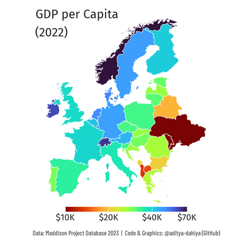
GDP per capita in Europe
September 28, 2024
Hourly Temperature Heat-Map: New Delhi
September 27, 2024
India at Mathematics Olympiad over the years
September 24, 2024
A timeline of Sentiments in plays of William Shakespeare
September 17, 2024
Economic Diversity and Student Outcomes
September 10, 2024
A Roads and Highways Map of Haryana
September 7, 2024
The Health Facilities Map of Haryana
September 6, 2024
7 decades of the Preston Curve
September 2, 2024
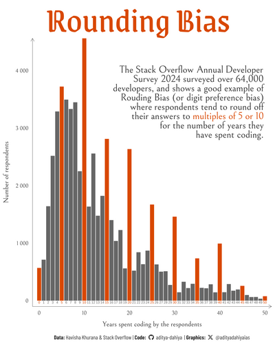
Stack Overflow Annual Developer Survey 2024
September 1, 2024
Power Rangers Frachise Ratings
August 31, 2024
Marriage Ages of English Monarchs
August 21, 2024
World’s Fairs data @ #TidyTuesday
August 14, 2024
Government Health-Care Expenditure over last 20 years
August 11, 2024
The Rural vs. Urban divide in India - Births in Government facilities!
August 9, 2024
Average Age of Olympians over the years
August 6, 2024
Shifting Health Burdens: The Fall of Infectious Diseases
August 5, 2024
Donut Chart on Top Causes of DALYs globally
August 1, 2024
Summer Movies @ IMDb
July 31, 2024
Chord Diagram for wealth-driven migration
July 29, 2024
Is migration mainly driven by wealth?
July 27, 2024
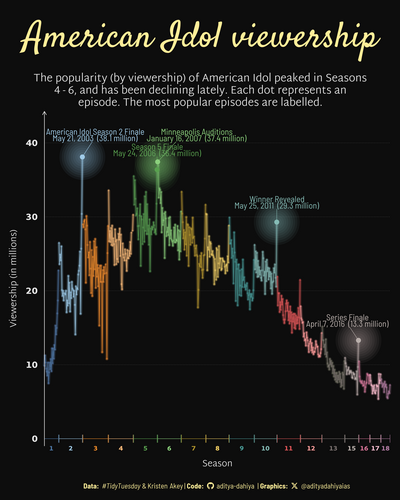
American Idol Episodes’ Viewership
July 26, 2024
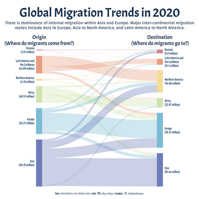
Migration: Inter-Continental Flows (2020)
July 25, 2024
English Women’s Football
July 21, 2024
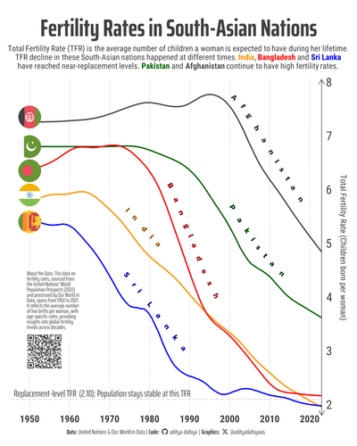
Comparing Fertility Rates in South Asia
July 15, 2024
Fertility Rate: A Bump Chart of Changing Rankings
July 13, 2024
Global Fertility Decline: The Past Seven Decades
July 12, 2024
Global Fertility Decline: A 70-Year Trend
July 11, 2024
Tidy Tuesday David Robinson’s functions
July 10, 2024
Radar Chart of Health Burdens in USA, China, India, and Globally
July 8, 2024
Comparing Health Impacts: Cardiovascular vs. Diabetes and Kidney Diseases
July 5, 2024
Global Health Burden: Visualizing the Top 25 Causes of Illness
June 30, 2024
Tidy Tuesday Datasets
June 27, 2024
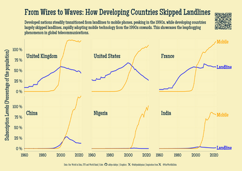
Technological Leapfrogging: Mobile Phones Over Landlines in the Developing World
June 26, 2024
Age-Specific Sex Ratios Over Seven Decades
June 25, 2024
Sex Ratios at Birth Worldwide (1970-2020)
June 24, 2024
LGBTQ+ Movies over the years (1990-2022)
June 22, 2024
Does Higher Healthcare Spending Guarantee Better Coverage?
June 4, 2024
Decades of Change: How Life Expectancy Gains (at birth and beyond 65) have Shifted.
June 2, 2024
How Have Global Life Expectancy Trends Diverged?
June 1, 2024
Life Expectancy at different Age Groups
May 31, 2024
Lisa’s Vegetable Garden Data
May 29, 2024
How Far Are Indian Capitals from Their Geographic Centres?
May 28, 2024
Navigating India: Closest International Airports
May 27, 2024
Comparing burden of disease: India vs China
May 25, 2024
Population changes in each decade (1960s - 2010s)
May 24, 2024
Population Surges and Falls
May 22, 2024
Carbon Majors Emissions Data
May 21, 2024
Regional Share in Global Population
May 20, 2024
Global Airports and Flights
May 19, 2024
Rich vs. Poor in the G-20
May 18, 2024
GDP vs. Life Expectancy
May 16, 2024
The Great American Coffee Taste Test
May 15, 2024
Global Salaries: Doctors vs. Nurses
May 12, 2024
Rolling Stone Album Rankings
May 10, 2024
Worldwide Bureaucracy Indicators
April 30, 2024
All the places - brands & stores around the world
April 25, 2024
Air Obstacles: New York City
April 20, 2024
Global Border Crossings
April 10, 2024
No matching items